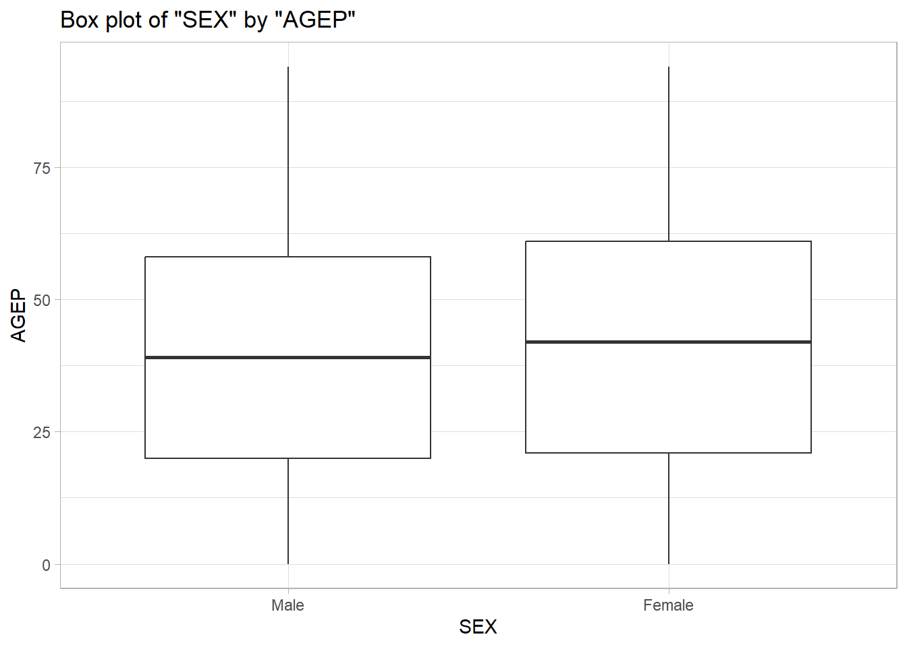

Preparing R packages to simplify the query process
#install.packages("httr")#install.packages("jsonlite")#install.packages("tidycensus")# Accessed via get_acs() functionlibrary(tidycensus)library(httr)library(jsonlite)library(dplyr)
Attaching package: 'dplyr'
The following objects are masked from 'package:stats':
filter, lag
The following objects are masked from 'package:base':
intersect, setdiff, setequal, union
The following object is masked from 'package:hms':
hms
The following objects are masked from 'package:base':
date, intersect, setdiff, union
Creating helper function to assist with query process for APIs. This function will convert the raw content to character strings, parse the JSON data, and then convert the data into a tibble.
# Helper function to process API responseprocess_api_response <-function(api_response) {# Check if the response was successfulif (api_response$status_code !=200) {stop("Error: API request failed with status code ", api_response$status_code) }# Convert raw content to character string content_string <-rawToChar(api_response$content)# Parse JSON data parsed_data <-fromJSON(content_string)# First row contains column names, the rest is the data column_names <- parsed_data[1, ] data_rows <- parsed_data[-1, ]# Convert to tibble and set column names tibble_data <-as_tibble(data_rows)colnames(tibble_data) <- column_names#creating new variable in order to check if variables are numeric valid_numeric_vars <-c("AGEP", "GASP", "GRPIP", "JWAP", "JWDP", "JWMNP", "PWGTP")#Created loop to convert proper numeric variables to numericfor(var incolnames(tibble_data)){if(var %in% valid_numeric_vars){ tibble_data[[var]] <-as.numeric(tibble_data[[var]]) } }#New variable to check for categorical variables valid_categorical_vars <-c("FER", "HHL", "HISPEED", "JWTRNS", "SCH", "SCHL", "SEX")#Created loop to convert proper categorical variables to factorfor(var incolnames(tibble_data)){if(var %in% valid_categorical_vars){ tibble_data[[var]] <-as.factor(tibble_data[[var]]) } }#Creating levels for each categorical variableif ("SEX"%in%colnames(tibble_data)) { tibble_data <- tibble_data |>mutate(SEX =factor(SEX, labels = SEX_levels)) }if ("SCHL"%in%colnames(tibble_data)) { tibble_data <- tibble_data |>mutate(SCHL =factor(SCHL, labels = SCHL_levels)) }if ("SCH"%in%colnames(tibble_data)) { tibble_data <- tibble_data |>mutate(SCH =factor(SCH, labels = SCH_levels)) }if ("JWTRNS"%in%colnames(tibble_data)) { tibble_data <- tibble_data |>mutate(JWTRNS =factor(JWTRNS, labels = JWTRNS_levels)) }if ("HISPEED"%in%colnames(tibble_data)) { tibble_data <- tibble_data |>mutate(HISPEED =factor(HISPEED, labels = HISPEED_levels)) }if ("HHL"%in%colnames(tibble_data)) { tibble_data <- tibble_data |>mutate(HHL =factor(HHL, labels = HHL_levels)) }if ("FER"%in%colnames(tibble_data)) { tibble_data <- tibble_data |>mutate(FER =factor(FER, labels = FER_levels)) }#Pasting correct time values in for JWAPif("JWAP"%in%colnames(tibble_data)) { tibble_data <- tibble_data |>left_join(JWAP_intervals, join_by(JWAP)) |>rename(work_arrival_time = middle_time,arrival_meridiem = meridiem) |>select(-JWAP) } #Pasting correct time values in for JWDPif("JWDP"%in%colnames(tibble_data)) { tibble_data <- tibble_data |>left_join(JWDP_intervals, join_by(JWDP)) |>rename(work_departure_time = middle_time2,departure_meridiem = meridiem2) |>select(-JWDP) } return(tibble_data)}
Creating a year validation function in order to confirm the only correct years (2022 to 2010) are queried.
# 2. Function to validate the yearvalidate_year <-function(year) {cat("API year is :", year)if (year <2010|| year >2022) {stop("Invalid year. Year must be between 2010 and 2022.") }}
The next step we need to do is write some code to make sure the use only inputs valid numeric variables.
# 3. Function to validate and process numeric variablesprocess_numeric_vars <-function(numeric_vars =c("AGEP", "PWGTP")) { valid_numeric_vars <-c("AGEP", "GASP", "GRPIP", "JWAP", "JWDP", "JWMNP", "PWGTP")# Check PWGTP is always includedif (!"PWGTP"%in% numeric_vars) { numeric_vars <-c(numeric_vars, "PWGTP") }# Validate numeric variablesif (!all(numeric_vars %in% valid_numeric_vars)) {stop("Invalid numeric variables. Valid options: AGEP, GASP, GRPIP, JWAP, JWDP, JWMNP, PWGTP.") }# Check at least one numeric variable other than PWGTPif (!any(numeric_vars %in% valid_numeric_vars[valid_numeric_vars !="PWGTP"])) {stop("At least one numeric variable other than PWGTP must be returned.") } }
The next step is to analyze the JWAP and JWDP variable independently in order to grab the variables
# Function to process time variablesprocess_time_variable <-function(variable_name) {# Grabbing information from API temp <- httr::GET(paste0("https://api.census.gov/data/2022/acs/acs1/pums/variables/", variable_name, ".json")) temp_list <- temp$content |>rawToChar() |> jsonlite::fromJSON()# Getting just the variable names and their values time_values <- temp_list$values$item time_vals_sorted <- time_values[sort(names(time_values))]# Converting the values into a tibble time_tibble <-tibble(id =seq(0, length(time_vals_sorted) -1), value = time_vals_sorted)# Converting to wide format time_wide <-separate_wider_delim(time_tibble, cols =c("value"), delim =" ", names =c("start", "meridiem", "to", "end", "meridiem_2"), too_few ="debug", names_repair ="unique", too_many ="drop") # Select the needed rows and convert to usable format time_intervals <- time_wide |>select(id, start, meridiem, end, meridiem_2) |>#meridiem is to track if values were for am or pmmutate(start =parse_hm(start),end =parse_hm(end),variable_name = id) # Make row 1 display NA across all columns for row 1 time_intervals[1, ] <-NA# Creating middle time value variable time_intervals <- time_intervals |>mutate(interval = (end - start) /2,interval =as.numeric(interval),interval =as.period(interval))# Turning start into a period time_intervals <- time_intervals |>mutate(start =as.period(start),middle_time =as.duration(start + interval)) |>select(middle_time, variable_name, meridiem) # Turning the first row variable back to 0 time_intervals[1, 2] <-0# Converting back to a time variable time_intervals <- time_intervals |>mutate(middle_time = hms::hms(seconds = middle_time))return(time_intervals)} #Renaming variables to insure they work in the helper functionJWAP_intervals <-process_time_variable("JWAP")
Warning: Debug mode activated: adding variables `value_ok`, `value_pieces`, and
`value_remainder`.
Function to pull levels from categorical variables
# Function to process time variablesprocess_cat_variable <-function(variable_name) {# Grabbing information from API temp <- httr::GET(paste0("https://api.census.gov/data/2022/acs/acs1/pums/variables/", variable_name, ".json")) temp_list <- temp$content |>rawToChar() |> jsonlite::fromJSON()# Getting just the variable names and their values cat_values <- temp_list$values$item cat_vals_sorted <- cat_values[sort(names(cat_values))]# Converting the values into a tibble cat_tibble <-tibble(id =seq(0, length(cat_vals_sorted) -1), value = cat_vals_sorted) cat_vector <- cat_tibble$valuereturn(cat_vector)}#Running function for categorical variables to store levelsSCHL_levels <-process_cat_variable("SCHL")SEX_levels <-process_cat_variable("SEX")SCH_levels <-process_cat_variable("SCH")JWTRNS_levels <-process_cat_variable("JWTRNS")HISPEED_levels <-process_cat_variable("HISPEED")HHL_levels <-process_cat_variable("HHL")FER_levels <-process_cat_variable("FER")
##Check that the value specified by the user is one of the above values
Main function to Query the API
# 5. Main function: Query the APIquery_census_pums <-function(year =2022,numeric_vars =c("AGEP", "PWGTP"),categorical_vars =c("SEX"),geography_level ="All",geography_subset =NULL) {# Validate the yearvalidate_year(year)# Validate numeric variablesprocess_numeric_vars(numeric_vars)# Validate categorical variablesprocess_categorical_vars(categorical_vars)# Get API URL base_url <-"https://api.census.gov/data" pathparam <-"acs/acs1/pums"# Get the full URL url <-paste0(base_url, "/", year, "/", pathparam, "?get=", paste(c(numeric_vars, categorical_vars), collapse =",")) # Check geography subset and add it to API callif (!is.null(geography_subset)) { url <-paste0(url, "&for=", geography_level, ":", geography_subset) }print(url)# API call using httr::GET api_response <-GET(url)# Check if the request was successfulif (http_error(api_response)) {stop("API request failed: ", status_code(api_response)) }# Process the response into a tibble data <-process_api_response(api_response)# Return the data return(data)}print(url)
function (description, open = "", blocking = TRUE, encoding = getOption("encoding"),
method = getOption("url.method", "default"), headers = NULL)
{
method <- match.arg(method, c("default", "internal", "libcurl",
"wininet"))
if (!is.null(headers)) {
nh <- names(headers)
if (length(nh) != length(headers) || any(nh == "") ||
anyNA(headers) || anyNA(nh))
stop("'headers' must have names and must not be NA")
headers <- paste0(nh, ": ", headers)
headers <- list(headers, paste0(headers, "\r\n", collapse = ""))
}
.Internal(url(description, open, blocking, encoding, method,
headers))
}
<bytecode: 0x0000023c292bd730>
<environment: namespace:base>
Testing Query with single year
# Example for the single year 2022 with numeric and categorical variablesresult <-query_census_pums(year =2022, numeric_vars =c("AGEP", "PWGTP", "GASP", "JWDP", "JWAP"),categorical_vars =c("SEX", "HISPEED", "FER"),geography_level ="state",geography_subset ="10")
API year is : 2022[1] "https://api.census.gov/data/2022/acs/acs1/pums?get=AGEP,PWGTP,GASP,JWDP,JWAP,SEX,HISPEED,FER&for=state:10"
Warning: The `x` argument of `as_tibble.matrix()` must have unique column names if
`.name_repair` is omitted as of tibble 2.0.0.
ℹ Using compatibility `.name_repair`.
# View the resultsprint ("end of function")
[1] "end of function"
print(result)
# A tibble: 9,641 × 11
AGEP PWGTP GASP SEX HISPEED FER state work_arrival_time
<dbl> <dbl> <dbl> <fct> <fct> <fct> <chr> <time>
1 60 82 70 Female Yes N/A … 10 07:52
2 61 101 70 Male Yes N/A … 10 02:17
3 31 149 70 Female Yes No 10 NA
4 28 106 70 Female Yes No 10 07:22
5 69 132 70 Female Yes N/A … 10 NA
6 30 76 3 Female N/A (GQ/vacant/no pai… Yes 10 08:22
7 32 198 3 Male N/A (GQ/vacant/no pai… N/A … 10 05:42
8 12 169 3 Male N/A (GQ/vacant/no pai… N/A … 10 NA
9 3 564 3 Female N/A (GQ/vacant/no pai… N/A … 10 NA
10 0 564 3 Female N/A (GQ/vacant/no pai… N/A … 10 NA
# ℹ 9,631 more rows
# ℹ 3 more variables: arrival_meridiem <chr>, work_departure_time <time>,
# departure_meridiem <chr>
Function for multiple years
# 6. Function for multiple yearsquery_multiple_years <-function( years, numeric_vars =c("AGEP", "PWGTP"), categorical_vars =c("SEX"), geography_level ="All", geography_subset =NULL) { all_years_data <-list()# Loop through each yearfor (year in years) {# Check if the year is valid#validate_year(year)cat("\nyear:", year)# Validate the year. if (year <2010|| year >2022) {print(paste("Skipping invalid year:", year))next# Skip this iteration and continue with the next year }# Get data for the current year using the single year function yearly_data <-query_census_pums(year = year,numeric_vars = numeric_vars,categorical_vars = categorical_vars,geography_level = geography_level,geography_subset = geography_subset )# Add a year column yearly_data$year <- year# Store the current year data in the list all_years_data[[as.character(year)]] <- yearly_data }# Combine all the data into one dataset final_data <-bind_rows(all_years_data) #Adding census class to tibbleclass(final_data) <-c("census", class(final_data))# Return datasetreturn(final_data)}
Testing the year 2022 to ensure query is working correctly
TEST
# Example for the single year 2022 with numeric and categorical variablesresult <-query_census_pums(year =2022, numeric_vars =c("JWAP", "GASP"),categorical_vars =c("SEX", "HISPEED"),geography_level ="state",geography_subset ="10")
API year is : 2022[1] "https://api.census.gov/data/2022/acs/acs1/pums?get=JWAP,GASP,SEX,HISPEED&for=state:10"
# View the resultsprint ("end of function")
[1] "end of function"
print(result)
# A tibble: 9,641 × 6
GASP SEX HISPEED state work_arrival_time arrival_meridiem
<dbl> <fct> <fct> <chr> <time> <chr>
1 30 Male Yes 10 NA <NA>
2 30 Female Yes 10 NA <NA>
3 290 Female Yes 10 NA <NA>
4 290 Male Yes 10 07:47 a.m.
5 110 Female Yes 10 NA <NA>
6 110 Male Yes 10 09:02 a.m.
7 180 Male No 10 NA <NA>
8 180 Female No 10 09:52 p.m.
9 180 Male No 10 09:37 a.m.
10 180 Female No 10 06:17 a.m.
# ℹ 9,631 more rows
# Example of multiple years of datamulti_year_result <-query_multiple_years(years =c( 2016, 2017, 2018), numeric_vars =c("AGEP", "PWGTP", "JWAP", "GRPIP" ), categorical_vars =c("SEX", "HISPEED", "SCH", "FER"), geography_level ="state", geography_subset ="10")
year: 2016API year is : 2016[1] "https://api.census.gov/data/2016/acs/acs1/pums?get=AGEP,PWGTP,JWAP,GRPIP,SEX,HISPEED,SCH,FER&for=state:10"
year: 2017API year is : 2017[1] "https://api.census.gov/data/2017/acs/acs1/pums?get=AGEP,PWGTP,JWAP,GRPIP,SEX,HISPEED,SCH,FER&for=state:10"
year: 2018API year is : 2018[1] "https://api.census.gov/data/2018/acs/acs1/pums?get=AGEP,PWGTP,JWAP,GRPIP,SEX,HISPEED,SCH,FER&for=state:10"
# View the resultprint(multi_year_result)
# A tibble: 26,939 × 11
AGEP PWGTP GRPIP SEX HISPEED SCH FER state work_arrival_time
<dbl> <dbl> <dbl> <fct> <fct> <fct> <fct> <chr> <time>
1 51 90 0 Female Yes No, … N/A … 10 06:12
2 32 153 0 Male Yes No, … N/A … 10 06:02
3 68 17 0 Male N/A (GQ/vacant/… No, … N/A … 10 NA
4 63 19 0 Female N/A (GQ/vacant/… No, … N/A … 10 NA
5 82 34 0 Female No No, … N/A … 10 NA
6 52 65 0 Female No No, … N/A … 10 NA
7 33 80 0 Female No No, … No 10 NA
8 26 66 0 Female No No, … No 10 NA
9 3 65 0 Female No Yes,… N/A … 10 NA
10 39 61 0 Female Yes No, … No 10 11:02
# ℹ 26,929 more rows
# ℹ 2 more variables: arrival_meridiem <chr>, year <dbl>
Tibble processing
# Define custom summary function for the 'census' classsummary.census <-function(census_data, numeric_vars =NULL, categorical_vars =NULL) {# Ensure PWGTP exists and is numericif (!"PWGTP"%in%names(census_data)) {stop("Weight variable 'PWGTP' is missing from the dataset.") }# Separate numeric and categorical columns from the dataif (is.null(numeric_vars)) { numeric_vars <-names(census_data)[sapply(census_data, is.numeric) &names(census_data) !="PWGTP"] }if (is.null(categorical_vars)) { categorical_vars <-names(census_data)[sapply(census_data, is.factor)] }# Weighted mean and standard deviation calculations summarize_numeric <-function(var_name, data) { numeric_vector <-as.numeric(data[[var_name]]) weight_vector <-as.numeric(data[["PWGTP"]])# Check for missing values in the weight vectorif (any(is.na(weight_vector))) {stop("Missing values found in the weight variable 'PWGTP'.") }# Calculate weighted mean weighted_mean <-sum(numeric_vector * weight_vector, na.rm =TRUE) /sum(weight_vector, na.rm =TRUE)# Calculate weighted standard deviation weighted_var <-sum(numeric_vector^2* weight_vector, na.rm =TRUE) /sum(weight_vector, na.rm =TRUE) weighted_sd <-sqrt(weighted_var - weighted_mean^2)return(list(mean = weighted_mean, sd = weighted_sd)) }# Initialize a list to store the summary results summary_list <-list()# Summarize numeric variablesfor (var in numeric_vars) { summary_list[[var]] <-summarize_numeric(var, census_data) }# Summarize categorical variables (counts)for (var in categorical_vars) { summary_list[[var]] <-table(census_data[[var]], useNA ="ifany") }return(summary_list)}
TODO
#Creating function for user to create weighted box plotsplot.census <-function(tibble_data, categorical_var, numeric_var) {#Telling user they must specify at least one categorical variableif (missing(categorical_var) ||missing(numeric_var)){stop("Must include one categorical variable and one numeric variable") }#Telling user time variables can not be use as numeric variablesif ("JWAP"%in% numeric_var){stop("JWAP is a time variable") }if ("JWDP"%in% numeric_var){stop("JWDP is a time variable") } p <-ggplot(tibble_data, aes(x =get(categorical_var), y =get(numeric_var), weight = PWGTP)) +geom_boxplot() +labs(title =paste("Box plot of", deparse(substitute(categorical_var)), "by", deparse(substitute(numeric_var))), x = categorical_var, y = numeric_var) +theme_light() print(p)}#Plot exampleplot.census(multi_year_result, "SEX", "AGEP")

Census API Investigation
Now that we have created our functions and API Query we need to use it to analyze some data, and to do so we are going to look at